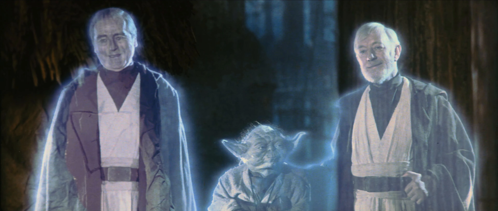

Vader chooses his son.
He turns against his master and saves Luke, destroying the Emperor at the cost of his own life.
Luke escapes the Death Star with his father just before the Rebel Alliance destroys the station. Before Vader dies, Luke removes his mask and sees his father, Anakin Skywalker, for the first time.
The Rebels celebrate their victory on Endor. As Luke watches the celebration, he sees the spirits of Obi-Wan, Yoda, and his redeemed father watching over him.
Anakin Skywalker has finally returned to the light.
Click the Force ghosts to return to the beginning.
